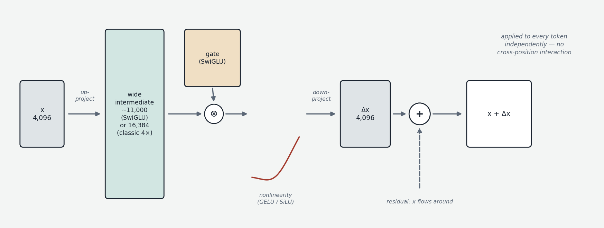
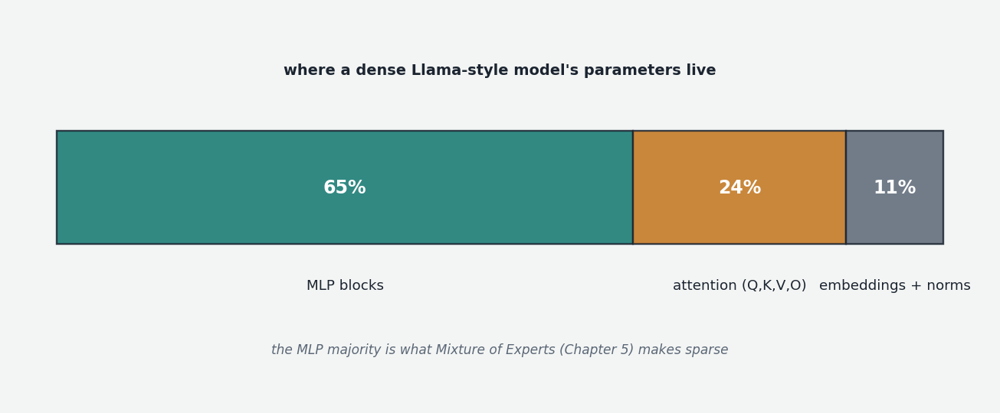

Attention (Chapter 00b) enriches every token's vector with relevant information from other positions — "it" has had some "cat" blended into it. But notice what attention can and cannot do. Mathematically, attention takes weighted averages of value vectors: fundamentally rearrangement — moving and combining information that already exists. What it cannot really do is compute on the result: take the combined representation and transform it into something new. For that, the transformer has a second block: the MLP.
MLP stands for multilayer perceptron — decades-old jargon for a basic feedforward neural network: layers of units that each take inputs, multiply by weights, sum, and apply a function. In a transformer, "the MLP block" (also called the feedforward block, or FFN) is a small two-step network applied to each token's vector independently, after attention.
Why a nonlinearity is the whole point
The block's structure follows from one concept: linearity. A linear operation is anything expressible as a matrix multiplication. The crucial property of linear operations is that composing them yields just another linear operation — stack ten matrix multiplications and you could collapse them into one matrix with identical behavior. No amount of stacking linear layers escapes what a single matrix can express. To break the ceiling you must insert something nonlinear — a function that bends the signal in a way no matrix can. The simplest classic is ReLU (rectified linear unit): pass positive inputs through, zero out negatives. Sandwich a nonlinearity between two linear layers and the resulting network can, with enough width, approximate essentially any reasonable function.

The MLP block is exactly that sandwich, applied per token: project up to a wider intermediate dimension (a learned matrix maps the 4,096-dimensional token vector to, classically, ~4× that — 16,384 — giving the computation more independent "slots"); apply the nonlinearity element-wise; project back down to the original width with a second learned matrix; and add the result into the token's running representation. The classical transformer nonlinearity is GELU (Gaussian Error Linear Unit), a smooth ReLU-like curve. Modern open models (Llama, Qwen, DeepSeek, Mistral) use SwiGLU, a gated variant: two parallel up-projections, one passed through a smooth function and multiplied element-wise against the other, so each slot's contribution is dynamically scaled — gated — by its partner. One sizing detail worth knowing because you will meet it reading model configs: since SwiGLU adds a third matrix, models using it shrink the intermediate dimension to roughly two-thirds of the classical 4× (Llama-style models use about 2.7× d_model) so the block's total parameter count stays comparable. The specific nonlinearity matters less than that there is one; the field has cycled through several and will cycle through more.
Crucially, there is no cross-token interaction anywhere in this block: run it on one token or a thousand and each result is identical. This is why Chapter 00b could claim attention is the only place information crosses positions.
Two facts that make MLPs matter
First, parameters. The wide intermediate means MLPs hold most of the model's weights — roughly two-thirds in Llama-style dense models, about twice the per-layer share of attention. When a model is quoted at 70 billion parameters, most of that lives here (and it is precisely this block that Mixture of Experts, Chapter 5, makes sparse).

Second, function. The leading interpretability hypothesis is that MLPs act as key-value memories. Read the up-projection as a bank of stored patterns (one per intermediate slot — 16,384 of them) and the down-projection as a bank of stored responses. An incoming token vector is compared against every pattern at once (that is what the up-projection's dot products do); slots whose patterns match activate; activated slots write their responses back into the vector. Structurally an associative memory: look up by pattern, retrieve by content. Interpretability work finds individual slots responding to recognizable concepts — Paris-related tokens, past-tense verbs, lines of Python — supporting the picture that MLPs are where knowledge and learned procedures live. The pithy division of labor: attention moves information; MLPs do the thinking.
Stacking: the transformer block and the depth dimension
A transformer block (or layer) is one attention sub-layer followed by one MLP sub-layer. Modern language models stack 32 to 80+ such blocks; each round gathers whatever context is currently relevant, then processes it, and by the final layer each position's vector has been through dozens of gather-process cycles. The sub-layers' outputs are added to a running representation rather than replacing it — the residual connection, whose full treatment (and the "residual stream" mental model) is Chapter 00e.
A natural question: across those 32–80 layers, what is shared and what is distinct? The parameters: completely distinct. Every layer has its own independent attention matrices, MLP matrices, and normalization parameters — a 32-layer model contains 32 separate copies of the block's weight set, which is why parameter count grows linearly with depth. This matters because layers learn a division of labor: interpretability consistently finds early layers handling surface and syntactic features, middle layers doing conceptual integration (entities, abstractions), late layers sharpening the concrete next-token prediction. None of this is designed in; the architecture offers identically-shaped slots, and training discovers the specialization. The nonlinearity: identical everywhere. It is a fixed architectural choice with no learned parameters of its own (SwiGLU's gate projection is learned and per-layer like any matrix, but the structural rule is the same in every block). Same blueprint repeated up the stack; different filling in every copy. (The exception proves the rule: weight-tied designs reusing one block repeatedly — Universal Transformers, ALBERT — save memory but underperform at equal compute and are absent from production LLMs; though note that Chapter 10's recurrent-depth models revive the idea for a different purpose, buying test-time computation by looping shared layers.)
The picture to keep
After attention gathers context, each token's vector independently passes through a learned pattern-match-and-retrieve engine: up-project against thousands of stored patterns, gate through a nonlinearity, write back the matched responses. This block holds most of the parameters and, on current understanding, most of the knowledge. One attention plus one MLP makes a block; a few dozen blocks with fully independent weights, connected by an additive running stream, make the body of the model — with the glue that makes such depth trainable at all (residuals and normalization) coming in Chapter 00e, after position is dealt with in Chapter 00d.